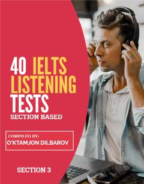

4IIELTS tinglash qismining 3-bo'limi uchun 40 ta amaliy test to'plami.
Ushbu qo'llanma IELTS imtihonining tinglash (Listening) qismi uchun maxsus ishlab chiqilgan 40 ta testni o'z ichiga oladi. Kitob Cambridge IELTS materiallari asosida tuzilgan bo'lib, nomzodlarga imtihonning 3-qismiga tayyorgarlik ko'rishda yordam beradi.